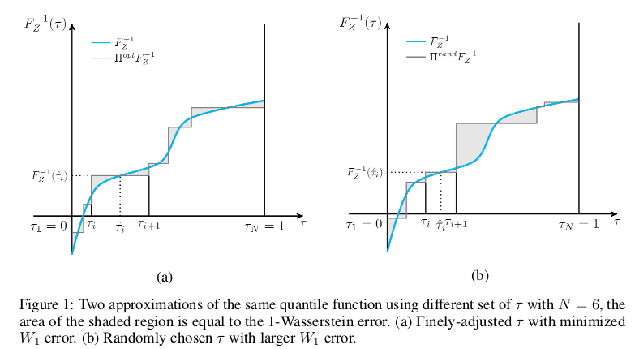
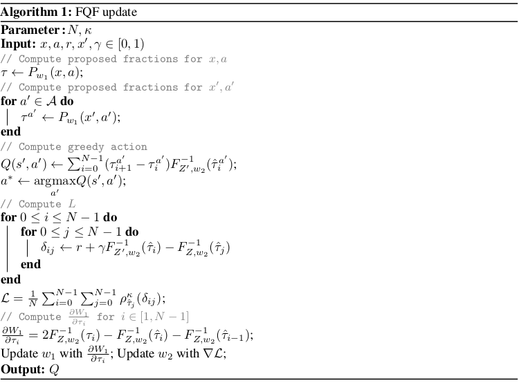
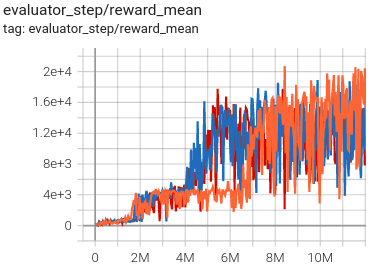
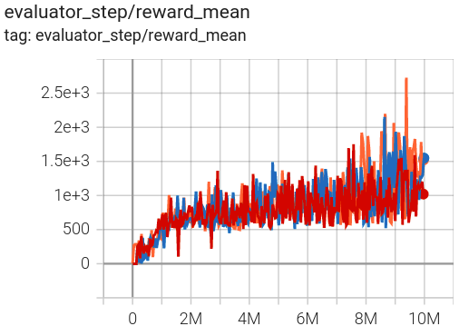

FQF¶
概述¶
FQF 首次在论文 Fully Parameterized Quantile Function for Distributional Reinforcement Learning 中被提出。 FQF 和 IQN (Implicit Quantile Networks for Distributional Reinforcement Learning) 的主要区别在于，FQF 额外引入了 the fraction proposal network，这是一个被训练的参数函数，用于在[0, 1]范围内生成 tau, 而 IQN 是从一个 base distribution, 如 U([0, 1]) 对 tau 进行采样。
核心要点¶
FQF 是一种 无模型（model-free） and 基于值（value-based） 的值分布强化学习算法。
FQF 仅支持 离散动作空间 。
FQF 是一种 异策略（off-policy） 算法。
通常情况下， FQF 使用 eps-greedy 或 多项式采样（multinomial sample） 进行探索。
FQF 可以与循环神经网络 (RNN) 结合使用。
关键方程或关键框图¶
对于任何非递减的连续 quantile function \(F_{Z}^{-1}\) , 定义 \(F_{Z}^{-1}\) 与 \(F_{Z}^{-1, \tau}\) 的 1-Wasserstein loss 为：
注意由于 \(W_{1}\) 无法被计算出来, 我们不能直接对 the fraction proposal network 进行梯度下降。 取而代之地, 我们把 \(\frac{\partial W_{1}}{\partial \tau_{i}}\) 作为损失函数交给优化器去优化。
\(\frac{\partial W_{1}}{\partial \tau_{i}}\) 由下式计算：
类似 implicit quantile networks, quantile tau 通过下式被编码进一个 embedding 向量：
然后将 the quantile embedding 与环境观测的 embedding 进行元素相乘，随后的全连接层将得到的乘积向量映射到相应的 quantile value 。
FQF 比 IQN 的优势如下图所示：左图 (a) 是 FQF 通过学习得到的 tau ，右图 (b) 是 IQN 随机选择的 tau ，阴影部分面积即为 1-Wasserstein loss，可以看出 FQF 得到 tau 的方式要比 IQN 得到 tau 的方式产生的 1-Wasserstein loss 要小。
{kind=link}
伪代码¶
{kind=link}
扩展¶
FQF 可以与以下技术相结合使用:
优先经验回放 (Prioritized Experience Replay)
Tip
是否优先级经验回放 (PER) 能够提升 FQF 的性能取决于任务和训练策略。
多步时序差分 (TD) 损失
双目标网络 (Double Target Network)
循环神经网络 (RNN)
实现¶
Tip
我们的 FQF 基准结果使用与DQN相同的超参数，除了 FQF 的独有超参数， the number of quantiles， 它经验性地设置为32。直观地说，与随机 fractions 相比，trained quantile fractions 的优势在较小的 N 下更容易被观察到。在较大的 N 下，当 trained quantile fractions 和随机 fractions 都密集地分布在[0, 1]时， FQF 和 IQN 之间的差异变得可以忽略不计。
FQF 算法的默认配置如下所示：
- class ding.policy.fqf.FQFPolicy(cfg: EasyDict, model: Module | None = None, enable_field: List[str] | None = None)[source]
- Overview:
Policy class of FQF (Fully Parameterized Quantile Function) algorithm, proposed in https://arxiv.org/pdf/1911.02140.pdf.
- Config:
ID
Symbol
Type
Default Value
Description
Other(Shape)
1
typestr
fqf
RL policy register name, refer toregistryPOLICY_REGISTRYthis arg is optional,a placeholder2
cudabool
False
Whether to use cuda for networkthis arg can be diff-erent from modes3
on_policybool
False
Whether the RL algorithm is on-policyor off-policy4
prioritybool
True
Whether use priority(PER)priority sample,update priority6
other.eps.startfloat
0.05
Start value for epsilon decay. It’ssmall because rainbow use noisy net.7
other.eps.endfloat
0.05
End value for epsilon decay.8
discount_factorfloat
0.97, [0.95, 0.999]
Reward’s future discount factor, aka.gammamay be 1 when sparsereward env9
nstepint
3, [3, 5]
N-step reward discount sum for targetq_value estimation10
learn.updateper_collectint
3
How many updates(iterations) to trainafter collector’s one collection. Onlyvalid in serial trainingthis args can be varyfrom envs. Bigger valmeans more off-policy11
learn.kappafloat
/
Threshold of Huber loss
FQF 算法使用的网络接口定义如下：
- class ding.model.template.q_learning.FQF(obs_shape: int | SequenceType, action_shape: int | SequenceType, encoder_hidden_size_list: SequenceType = [128, 128, 64], head_hidden_size: int | None = None, head_layer_num: int = 1, num_quantiles: int = 32, quantile_embedding_size: int = 128, activation: Module | None = ReLU(), norm_type: str | None = None)[source]
- Overview:
The neural network structure and computation graph of FQF, which combines distributional RL and DQN. You can refer to paper Fully Parameterized Quantile Function for Distributional Reinforcement Learning https://arxiv.org/pdf/1911.02140.pdf for more details.
- Interface:
__init__,forward
- forward(x: Tensor) Dict[source]
- Overview:
Use encoded embedding tensor to predict FQF’s output. Parameter updates with FQF’s MLPs forward setup.
- Arguments:
- x (
torch.Tensor): The encoded embedding tensor with
(B, N=hidden_size).
- x (
- Returns:
outputs (
Dict): Dict containing keywordslogit(torch.Tensor),q(torch.Tensor),quantiles(torch.Tensor),quantiles_hats(torch.Tensor),q_tau_i(torch.Tensor),entropies(torch.Tensor).
- Shapes:
x: \((B, N)\), where B is batch size and N is head_hidden_size.
logit: \((B, M)\), where M is action_shape.
q: \((B, num_quantiles, M)\).
quantiles: \((B, num_quantiles + 1)\).
quantiles_hats: \((B, num_quantiles)\).
q_tau_i: \((B, num_quantiles - 1, M)\).
entropies: \((B, 1)\).
- Examples:
>>> model = FQF(64, 64) # arguments: 'obs_shape' and 'action_shape' >>> inputs = torch.randn(4, 64) >>> outputs = model(inputs) >>> assert isinstance(outputs, dict) >>> assert outputs['logit'].shape == torch.Size([4, 64]) >>> # default num_quantiles: int = 32 >>> assert outputs['q'].shape == torch.Size([4, 32, 64]) >>> assert outputs['quantiles'].shape == torch.Size([4, 33]) >>> assert outputs['quantiles_hats'].shape == torch.Size([4, 32]) >>> assert outputs['q_tau_i'].shape == torch.Size([4, 31, 64]) >>> assert outputs['quantiles'].shape == torch.Size([4, 1])
FQF 算法中使用的贝尔曼更新（Bellman update）在 fqf_nstep_td_error 函数中定义，我们可以在 ding/rl_utils/td.py 文件中找到它。
基准测试¶
environment |
best mean reward |
evaluation results |
config link |
comparison |
|---|---|---|---|---|
Pong (PongNoFrameskip-v4) |
21 |

|
Tianshou(20.7) |
|
Qbert (QbertNoFrameskip-v4) |
23416 |
 | Tianshou(16172.5) |
|
SpaceInvaders (SpaceInvadersNoFrame skip-v4) |
2727.5 |
 | Tianshou(2482) |
- P.S.:
上述结果是通过在三个不同的随机种子 (0, 1, 2) 上运行相同的配置获得的。
参考文献¶
(FQF) Derek Yang, Li Zhao, Zichuan Lin, Tao Qin, Jiang Bian, Tieyan Liu: “Fully Parameterized Quantile Function for Distributional Reinforcement Learning”, 2019; arXiv:1911.02140. https://arxiv.org/pdf/1911.02140